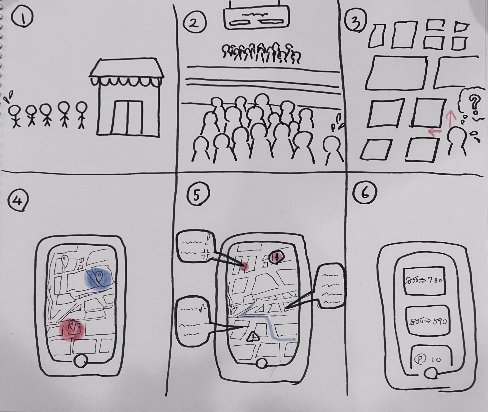

小林-夏休みの課題
店、駅、道などの混雑回避のためのアプリ

①店の混雑
②駅の混雑、駅内で迷って電車に間に合わない時
③初めての道でいいルートが分からない（混雑や坂道を避けたい、室内を通りたい、景色がいい場所を通りたい）時
↓
④リアルタイムの混雑状況をマップで表示、マップのアクセス数で混雑予想
⑤他の利用者の口コミや履歴でおすすめルートを表示
⑥情報提供した利用者はポイントやクーポンなどのメリット